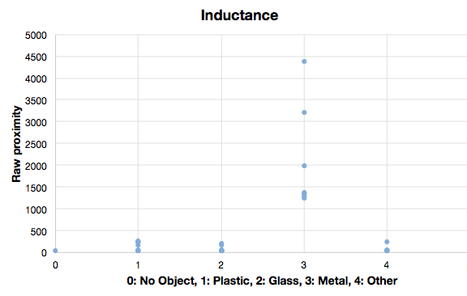
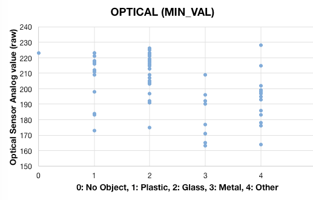
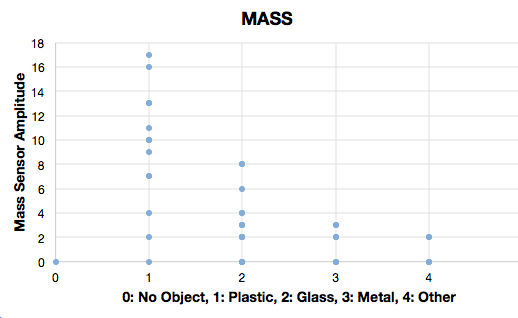

Mechatronics 2016 Team B
problem descriptionsystem design
system implementation
system performance
project management
media
about the team
documents
home
View the Project on GitHub jaimechu/cmumechatronics2016teamb
TOM was able to meet most requirements and exceed others.
The project specifications requires that the device must be able to accept trash at an average speed of 3 seconds per item for 15 hours. By design, TOM was able to accept trash at a rate of about 2.6 seconds.
The maximum volume size was 80 gallons, while the entirety of our system was less than 54 gallons while our competitors ranged around 65-75 gallons.
Our device was also able to able to accurately sort consistently about 60% of the time and store 70% of the time into 2-bins (Recycling and Others).
During our final public demo, TOM performed as expected, sorting 9/15 items under 48 seconds and coming in third place. Some latency was due to human operation of system and reaction times.
SENSORS
 INDUCTANCE | From our variety of tests with different items, we were able to successfully determine that our inductance sensor worked for even the thinnest amount of metal. The LDC1000 was even able to detect a chip bag. From the graph above, the metal items are clearly separated compared to the other three types. This made identifying metal objects easy. Here, any object was determined to be metal if the proximity value was greater than 1000.
{kind=link}
 OPTICAL | From the graph above, we chose to only choose to differentiate glass and plastic items versus others. Transparent objects showed a smaller change in output than opaque objects. Black objects are an exception, since a black object will look transparent against the black paddles in the chimney. Here, any object was determined to be transparent if the minimum optical value was greater than 208.
{kind=link}
 MASS | The mass sensor was used to differentiate heavy transparent objects, typicall glass, versus light-weight transparent objects, typically plastic. The mass sensor bank uses four Hall Effect sensors and magnets to determine the distance between two parallel plates separated by springs. The individual sensors measure the magnetic flux from the magnet’s field, so the analog output changes based on the distance between plates, and consequently the force applied by the test object’s mass. Although not linear, the sensor is sensitive enough to differentiate plastic and styrofoam, yet has a wide enough range to detect heavy glass objects. Here, any object was determined to be heavy if the mass value was greater or equal to 7.
{kind=link}
COMPACTING

As seen above, the compactor was successfully compact aluminum cans of different sizes, both horizontally and vertically. If an non-compactable item was set to be compacted, the firmware would timeout when unsuccessful and compactor plate would immediately retract.